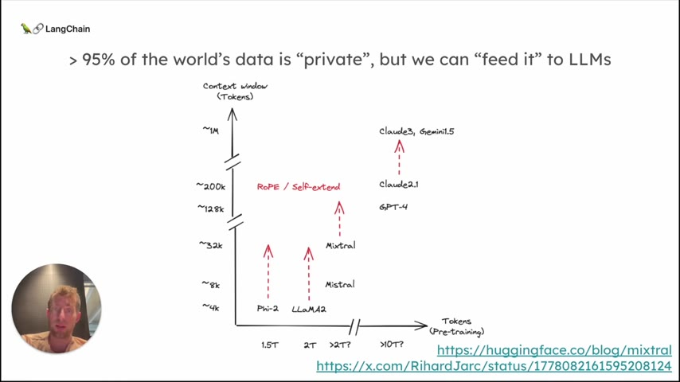
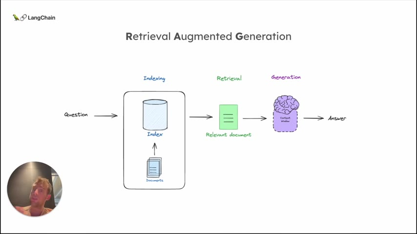
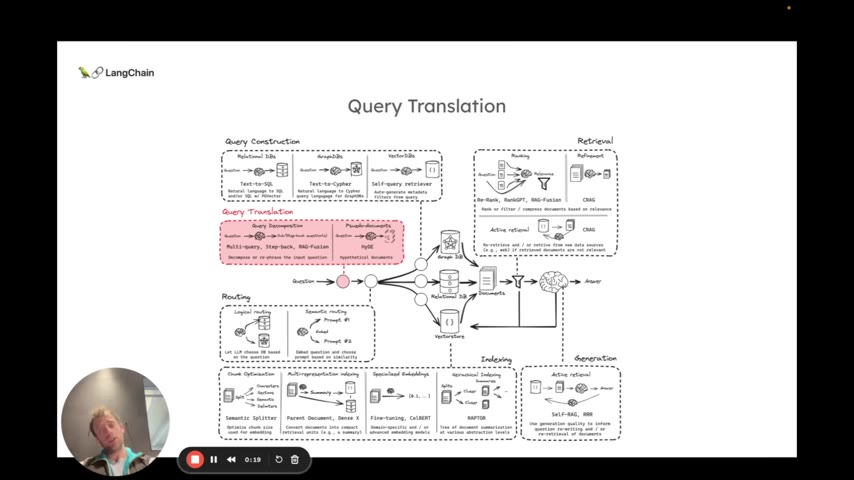
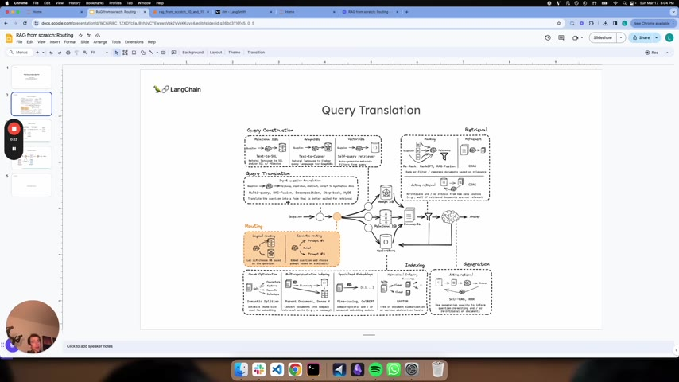
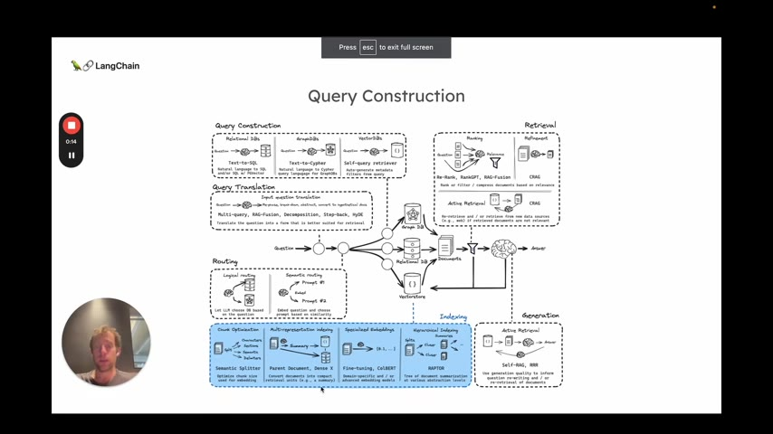
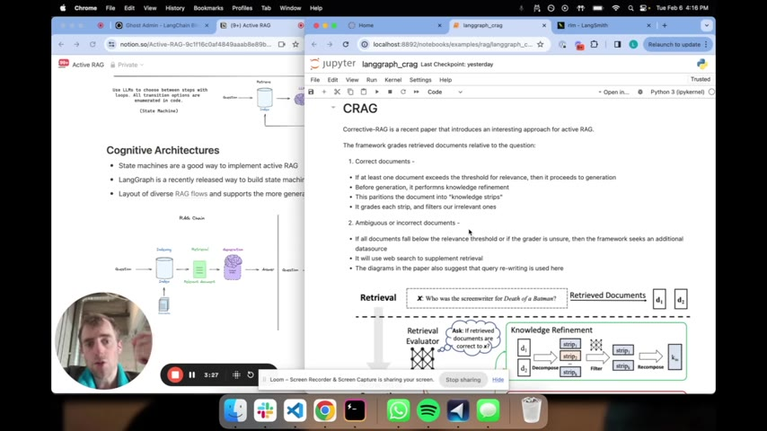
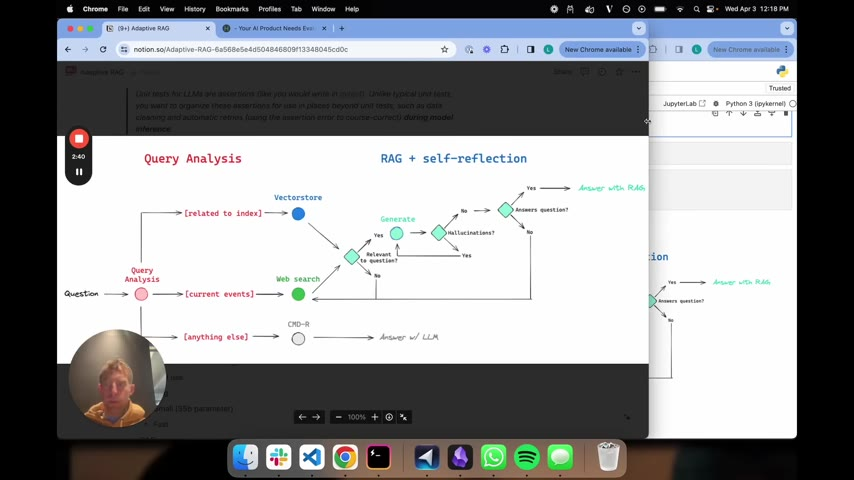

Most of the world's data lives behind walls — in private databases, corporate silos, and personal files. RAG bridges that gap by retrieving relevant private information and feeding it to an LLM so it can answer grounded in your data. This 17-part series by Lance Martin walks through every layer of a production RAG pipeline, from the basic indexing-retrieval-generation loop to active RAG with feedback loops, routing, query construction, and advanced indexing strategies.
Watch on YouTubeThe core motivation for RAG is simple: most of the world's data is private, and LLMs are trained on public data. RAG bridges the gap.
The chart that opens the series tells the whole story. On one axis, the tokens used in pre-training — from 1.5T for smaller models to the multi-trillion realm of proprietary systems. On the other, the context window — how much external information you can feed the model. A year ago, models topped out at 4–8K tokens (a dozen pages). Today, Claude 3 and Gemini stretch to a million tokens (thousands of pages).
That expansion makes people ask: if you can stuff thousands of pages into the context window, why retrieve at all? The answer, explored throughout the series, is that context stuffing is not retrieval — and the difference matters when you need precision, security, and cost control.

00:00:4895% of the world's data is "private", but we can "feed it" to LLMs

The foundational flow has three stages:
In LangChain, this is a few lines of code using the LangChain Expression Language (LCEL):
prompt | llm
That's a chain. Add a retriever and you get a RAG chain that automates retrieval, context population, and answer parsing in one invoke.

Raw user questions are often poorly suited for semantic similarity search. Query translation modifies the question before retrieval to improve alignment with the index. Five techniques are covered:
Multi-query — Generate multiple differently-worded sub-questions from a single prompt, retrieve from each, and take the unique union. The "shotgun approach" increases the likelihood of finding the right document despite embedding-space nuances.
RAG Fusion — Same fan-out strategy, but instead of a union, apply reciprocal rank fusion across all retrieval lists to produce a consolidated ranking. The reranking step is the key differentiator.
Decomposition (Least-to-Most) — Break the question into sub-problems solved sequentially, using each answer to inform the next. Related work (IR-CoT) interleaves retrieval with chain-of-thought reasoning.
Step-back Prompting — Ask a more abstract question first. Given "What is task composition for LLM agents?" the model generates "What is the process of task composition?" — a higher-level query that retrieves foundational conceptual knowledge.
HyDE (Hypothetical Document Embeddings) — Generate a hypothetical document that answers the question using the LLM's world knowledge, then embed that document instead of the sparse raw question. The hypothetical document lives in the same space as the index and is closer to the target.

Routing takes a (possibly translated) question and sends it to the right source — a vector store, a relational DB, a graph DB, or web search. Two approaches:
Logical routing — Give the LLM descriptions of available data sources, bind a structured output schema (via function calling), and let the model reason about which source fits. The output is a constrained structured object, cleanly parseable into a routing decision.
Semantic routing — Embed the question and embed prompts describing each target. Compute similarity and pick the closest. Simpler but less explainable.
Query construction goes one step further: translate natural language into the DSL of the target database. Examples include text-to-SQL, text-to-Cypher for graph DBs, and text-to-metadata-filters for vector stores — all implemented via function calling with the database schema bound to the model.
Routing is the process of taking a question and sending it to the right place — be it a different database, a different prompt, or web search.— Lance Martin

Two advanced indexing strategies that move beyond simple chunk-and-embed:
Multi-representation indexing — Decouple the retrieval unit from the raw document. Produce a summary of each document, index the summary for retrieval, and store the full document separately in a doc store. At retrieval time, the summary finds the right document, and the full document is returned for generation. Ideal for long-context LLMs that can consume entire documents.
RAPTOR — Build a hierarchical index of document summaries. Cluster documents, summarize each cluster, and recurse until you reach a single high-level summary. Index all levels together. Low-level questions retrieve detailed chunks; high-level questions retrieve cross-document summaries. The abstraction hierarchy gives you semantic coverage across question types.
ColBERT — Instead of compressing a document into a single vector, produce an embedding for every token in the document. Compute similarity between every question token and every document token, take the max per question token, and sum. Token-level matching preserves nuance that single-vector compression loses.

Basic RAG is a single-shot linear pipeline. Active RAG adds reasoning at every stage using LangGraph state machines:
The CRAG paper's workflow is the template: 1. Retrieve documents from the vector store 2. Grade each document for relevance — if any exceed the threshold, proceed to generation 3. If all fail, rewrite the query and retrieve from an external source (web search) 4. Generate the answer from the best available context 5. Grade again for hallucinations and answer relevance
Each grading step uses structured output (Pydantic data models bound to the LLM via function calling) to produce deterministic binary scores. The LangGraph state machine encodes all possible transitions as conditional edges, making the flow auditable and reproducible.
LangGraph is really good for flows you have clearly defined — it's like putting an agent on guardrails. Less flexible, but highly reliable.— Lance Martin

Adaptive RAG brings together query analysis and flow engineering into a single cohesive system:
Query analysis — Analyze the input question to decide routing: vector store, web search, or LLM fallback. Command R (35B parameters) is highlighted for this role — small, fast, tool-use capable, and well-tuned for RAG.
Online unit testing — Apply grading checkpoints throughout the inference loop. If retrieval produces irrelevant documents, correct by falling back to web search. If generation contains hallucinations, correct by regenerating. If the answer doesn't address the question, kick back to retrieval.
The key insight from Hammid Husseini's framing: these aren't traditional unit tests — they're automatic retries during model inference. The grading checks are organized as assertions embedded in the flow, not as a post-hoc evaluation layer.
Unlike typical unit tests, you want to organize these assertions in places beyond standard testing — specifically, automatic retries during model inference.— Lance Martin
Jazz isn't dead, it just smells funny. I think the same for RAG — RAG is not dead, but it will change.— Lance Martin
The series closes with a provocative question: as context windows grow to millions of tokens, does retrieval become unnecessary? Lance and Greg Kamradt pressure-test this with multi-needle-in-a-haystack experiments on GPT-4:
Place multiple facts ("needles") at varying depths in a 120K-token context and ask the model to retrieve them. Three findings:
The needle challenges model providers publish are often misleadingly easy — single needle, no reasoning, needles that stand out from the background. Real-world retrieval involves multiple facts, reasoning, and subtle signals in dense text.